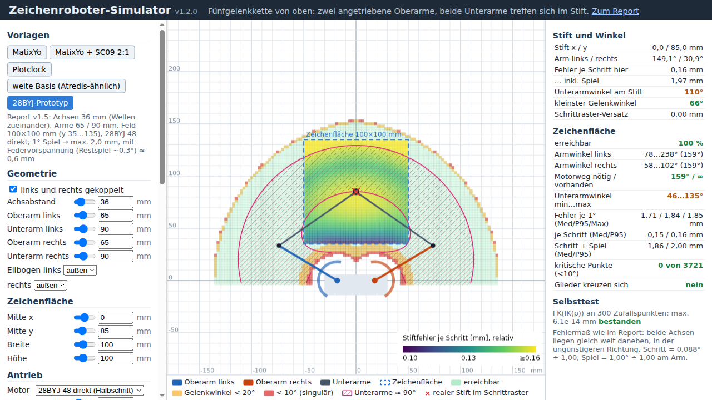
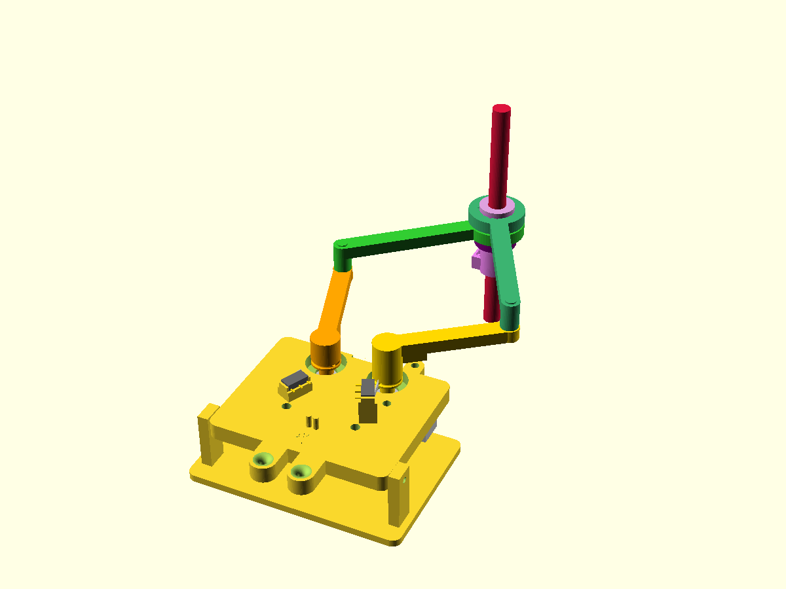
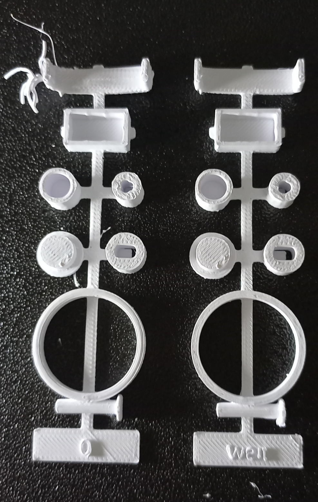
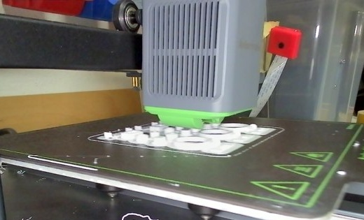

A plastic toy drawing robot taught me something about what GenAI can do.
My vacation project started with one of those cheap drawing robots for kids. It is basically a Spirograph with ambition: two motors drive two arms, the arms meet at the pen, and the thing draws surprisingly clean pictures. I wanted to build my own, 3D printed, with a little LLM on top so it draws whatever you ask for.
So I opened Claude and started talking mechanics. We went through the five-bar linkage and read a security blog that had taken the toy apart. Then Claude built an interactive simulator in plain HTML. You drag the pen around and a heatmap shows the drawing error across the whole field. That simulator delivered the first real insight. The arm geometry barely matters, because the play in the cheap stepper gearboxes swamps everything else. A rubber band that keeps the gears pressed to one side does more than any clever arm length.

From there it got physical. Claude designed every part in OpenSCAD, fully parametric, and ran a collision check through the whole range of motion. That check caught two real bugs: the pen hit the head plate during homing, and a cam sat 90 degrees off in the model. When I grumbled about too many screws, the next version went from 24 down to 9 by using crush ribs instead. Claude wrote down every decision as it went. It also picked bearings and switches on Amazon, and I clicked "buy" myself.

Before printing nine hours of parts, Claude designed a small fit test with every critical bore and seat in three sizes. Then it watched the print through the two webcams on my printer, one snapshot every five minutes. When a part came loose, we looked at it together and agreed on a brim for the next run. I measured the results, reported "press fit" or "too loose", and the numbers went straight back into the model.


Next comes the firmware. Claude will write it and flash it onto the microcontroller, but that part stopped surprising me a while ago. My bet is that it will once again put a little web server on the chip as the control panel. :-D
I ran the printer and made the calls. Everything else happened in a conversation. A year ago I would have filed half of this under "not something a language model can do".
What surprises you most here? Or does nothing surprise you anymore?
PS: The image model got the arm linkage wrong in the title picture. Image generation still lags behind what the language model can do.
LinkedWild